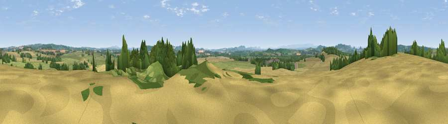

Viewpoint near Sutton St Nicholas
#16934 in England · top 46% of its area beats it · near Sutton St Nicholas · footpathWhere it is
The exact computed spot (SO 54025 46475). Click the marker for map links.
Public access: a public right of way passes within 53 m of this spot. Computed from Natural England's CRoW access layer and OpenStreetMap rights of way — not the legal definitive map. Always verify locally.
The view, rendered

A 360° render of this exact spot computed from the terrain model, tree cover and land cover — summer colours, afternoon light, calibrated against photographs of famous viewpoints. Real trees, hedges and buildings will differ in detail.
The panorama
Grey silhouette: terrain skyline in each direction (720 bearings, Earth curvature and refraction included). Dashed green: skyline with trees (+15 m) and buildings (+8 m) as obstacles. Blue strip: how far the ground is visible on each bearing.
Where the view opens
Wedge length = distance to the farthest visible ground on that bearing (vegetation-aware). Rings at 10, 25 and 50 km.
What fills the view
41% cropland · 35% grassland · 22% woodland · 2% built-up
Angular shares of the visible panorama (visual magnitude), not map area. Landscape diversity 0.50 (0–1 Shannon).
Key numbers
More beautiful places nearby
The staircase of upgrades: each row has a higher view potential than everything closer. Driving times are estimates from straight-line distance, calibrated against real road routing — check an actual route before setting out.
| Place | Direction | Drive | Score |
|---|---|---|---|
| Viewpoint near Marden | W · 2 km | ~5 min | 55.2 |
| Ashgrove Hill | N · 3 km | ~8 min | 56.0 |
| Viewpoint near Moreton on Lugg | SW · 4 km | ~9 min | 64.5 |
| Viewpoint near Bodenham | NNW · 6 km | ~12 min | 71.4 |
| Viewpoint near Canon Pyon | W · 8 km | ~15 min | 74.6 |
| Round Oak Hill | W · 9 km | ~18 min | 75.4 |
| Viewpoint near Westhope | NW · 10 km | ~19 min | 77.0 |
| Seagar Hill | SE · 11 km | ~20 min | 82.1 |
52.11467, -2.67281 · source: screening · position refined by local search. Computed location — check access rights before visiting.